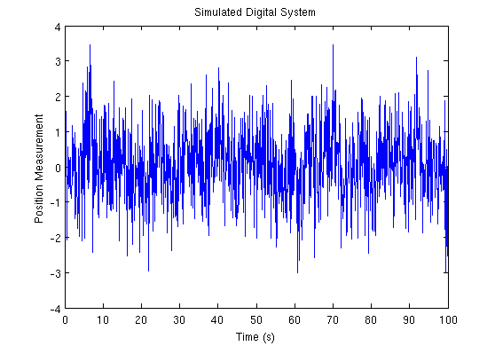
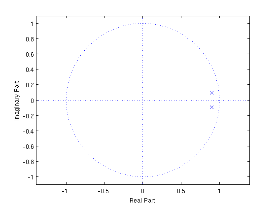
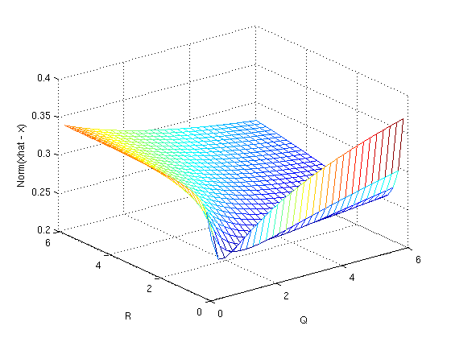

Contents
Homework 4 - Problem 1
Kalman filter at its best - simulation. Suppose we have a 2nd order system that we are regulating about zero (position and velocity) by wrapping an "optimal" control loop around the system. The new dynamics of the continuous time system are given by the closed-loop A matrix:
Suppose our measurement is simply position (C=[1 0]). There is a white noise process disturbance (force, B_w = [0 1]^T) acting on the controlled system.
clear; clc; close all; format compact; format short; Fs = 10; Ts = 1/Fs; A_cl = [0, 1; -1, -1.4]; C = [1, 0]; Bw = [0, 1]'; D = [0,1];
Part A
Simulate the controlled system with the disturbance force (1\sigma = 2) and a sampled sensor noise (1\sigma = 1) for 100 seconds at 10Hz.
sigma_q = 2; sigma_r = 1; t = 0:Ts:100; w = sigma_q * randn(size(t)); v = sigma_r * randn(size(t)); [Ad,Bd,Cd,Dd] = c2dm(A_cl,Bw,C,0,Ts,'zoh'); dPlant = ss(Ad,[zeros(size(Bd)),Bd,zeros(size(Bd))],Cd,[0,0,1],Ts,... 'statename',{'position' 'velocity'},... 'inputname',{'u','w','v'},... 'outputname',{'y'}); [y_d,t_d,x_d] = lsim(dPlant,[zeros(size(t));w;v]); figure(1); plot(t_d,y_d); xlabel('Time (s)'); ylabel('Position Measurement'); title('Simulated Digital System');
Part B
What is Q, Q_d and R_d?
Q = sigma_q^2
R = sigma_r^2
% Bryson's Trick
S = [-A_cl, Bw*Q*Bw'; zeros(2), A_cl'];
C_bryson = expm(S*Ts);
Q_d = C_bryson(3:4,3:4)' * C_bryson(1:2,3:4)
R_d = sigma_r^2/Ts
Q =
4
R =
1
Q_d =
0.0012 0.0174
0.0174 0.3478
R_d =
10
Part C
Calculate the steady state Kalman gain for the system. This can be done in one of many ways: iterate the Kalman filter until it converges, dlqe.m, dare.m, kalman.m, dlqr.m (+ predictor to current estimator trick), tec. What is the steady state covariance of the estimates after the time update, P^{(-)}, as well as after the measurement update, P^{(+)}. Where are the poles of the estimator?
%[M,P,Z,E] = lqed(A_cl, Bw, C, Q, R, Ts);
[M,P,Z,E] = dlqe(Ad, eye(2), Cd, Q_d, R_d);
P_plus = P
P_minus = Ad * P_plus * Ad' + Q_d
L = M
Poles = E
figure(2);
zplane([],E);
P_plus =
0.7307 0.2570
0.2570 1.2315
P_minus =
0.7833 0.2678
0.2678 1.2337
L =
0.0681
0.0239
Poles =
0.8950 + 0.0954i
0.8950 - 0.0954i
 Part D
Use the steady state Kalman filter to generate an estimate of the 2 states over time. Calculate the norm of the standard deviation of the errors for each state.
x_hat_minus = zeros(size(x_d))'; x_hat_plus = zeros(size(x_d))'; for k = 1:length(y_d), x_hat_plus(:,k) = x_hat_minus(:,k) + ... L * (y_d(k) - Cd * x_hat_minus(:,k)); x_hat_minus(:,k+1) = Ad * x_hat_plus(:,k); end err = x_d - x_hat_plus'; N = norm(std(err(:,1)),std(err(:,2)))
N =
0.2481
Part E
Change the ratio of the Q and Rd weights in the Kalman filter design. Find what ratio of Q to R minimizes the errors.
[X,Y] = meshgrid(0.1:0.2:6); N = zeros(size(X)); for ii = 1:length(X), for jj = 1:length(Y), Q = X(ii,jj); R = Y(ii,jj); % Bryson's Trick S = [-A_cl, Bw*Q*Bw'; zeros(2), A_cl']; C_bryson = expm(S*Ts); Q_d = C_bryson(3:4,3:4)' * C_bryson(1:2,3:4); R_d = R/Ts; [M,P,Z,E] = dlqe(Ad, eye(2), Cd, Q_d, R_d); P_plus = P; P_minus = Ad * P_plus * Ad' + Q_d; L = M; x_hat_minus = zeros(size(x_d))'; x_hat_plus = zeros(size(x_d))'; for k = 1:length(y_d), x_hat_plus(:,k) = x_hat_minus(:,k) + ... L * (y_d(k) - Cd * x_hat_minus(:,k)); x_hat_minus(:,k+1) = Ad * x_hat_plus(:,k); end err = x_d - x_hat_plus'; N(ii,jj) = norm(std(err(:,1)),std(err(:,2))); end end
Using a mesh, I can visualize the effect of varying Q and R have on the Kalman filter's error. Using MATLAB's min() function reveals the location of Q and R that minimizes the error.
mesh(X,Y,N) xlabel('Q'); ylabel('R'), zlabel('Norm(xhat - x)'); [I,J] = find(N==min(N(:))) Q = X(I,J) R = Y(I,J)
I =
8
J =
30
Q =
5.9000
R =
1.5000
